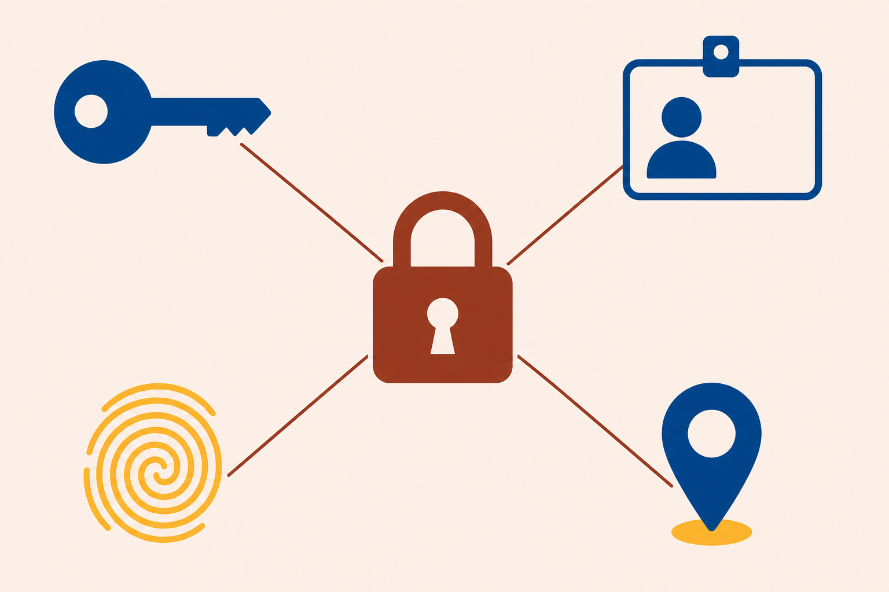
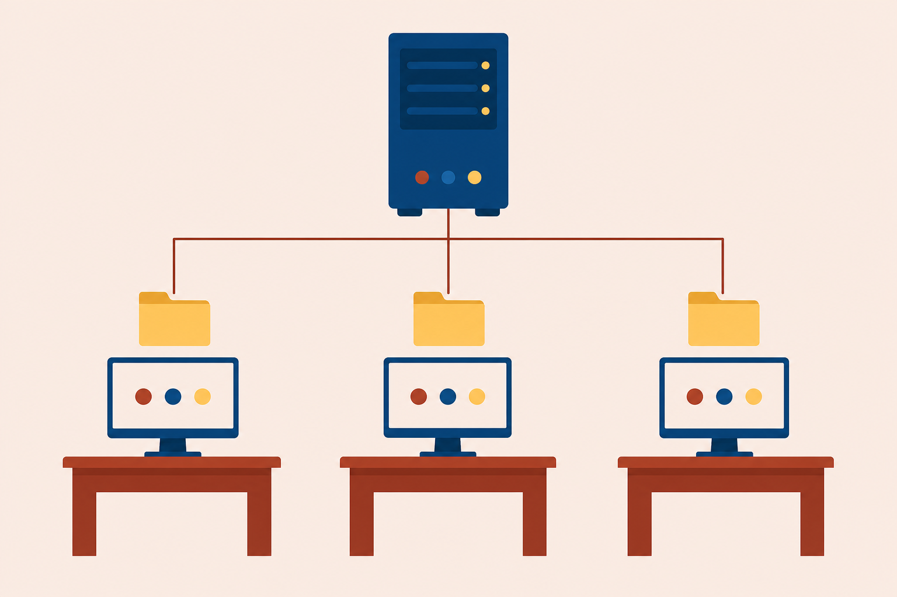

01
Summarize
the logical security controls behind every account: IAM, least privilege, and the cryptography basics.
Logical security, Windows security settings, and shares: the keys, the locks, and the department folder they guard.
Start here: Your team’s files sit on a shared drive. Who decided what you can open, and what stops everyone else?
the logical security controls behind every account: IAM, least privilege, and the cryptography basics.
Windows login options, domain accounts, and the group policy that pushes the rules to every machine.
one department share with the share and NTFS permissions that fit each user.
One shared folder rides the whole class. The department needs it open to the right people and closed to everyone else.
One folder, three lessons, zero guessing.
Claim who you are.
Prove the claim.
Look up what you may do.
Enforce it at the resource.
Any weakness that could cause damage or a breach.
The potential to exploit that weakness.
The likelihood and the impact, together.
An unsecured LABFILES is the weakness. A snooping account is the threat. The leak is the risk you are paid to shrink.
One shared key locks and unlocks.
A key pair splits the job between two keys.
Any input, one fixed-length digest. No key, no way back: it proves integrity.
Proves a message or certificate was not altered or spoofed. The seal breaks if anyone touches the contents.
The key pair locks the box.
The box crosses the network.
Both systems hold the single key.
net user # manage accounts from the command line
With a partner: Assign access to LABFILES using least privilege and implicit deny. Who gets what, and who gets nothing?
Watch out: the built-in Administrator account runs with UAC disabled.
Do you want to allow this app to make changes to your device?

Stores a copy of Active Directory’s network information.
In the domain. No directory copy. COMPTIA lives here.
Groups the accounts for management.
gpupdate # apply policy now gpresult # report what applied
Policy sets the rules for machines like COMPTIA. The next lesson builds the share those rules protect.
With a partner: Name the Windows login option the first clue describes, then the command that answers the second.
Printers follow the same pattern: Printer Properties, Sharing tab, plus drivers for the other OSs that will connect.
Network visits only.
Every visit. Security tab.
At the server keyboard the share lock never applies, so NTFS decides alone.
With a partner: Decide what James can do over the network. Then decide again for a session at the server itself.
net view # list reachable devices net use # manage mapped drives

Name the four IAM checkpoints in order.
Share says Read. NTFS says Modify. What wins over the network, and why?
Which tab sets share permissions, and which tab sets NTFS?
Next step: Run the CertMaster labs: Create User Accounts, Configure NTFS Permissions, and Support AD Domain Networking. Chapter 16 installs the operating system itself.